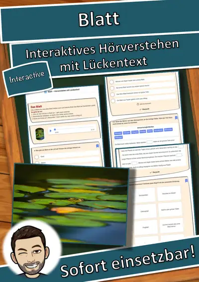

Erwartung Lückentext mit Wortspeicher Hörverstehen und Suchsel
Erwartung – Hörverstehen, Lückentext mit Wortspeicher und Suchsel | Sachtext | Ethik | Klasse 5–6 | mit Lösungen
Mit diesem Arbeitsblatt erarbeiten Ihre Schülerinnen und Schüler das Lehrplanthema „Erwartung“ in vier Schritten: zuhören, lesen, Lücken füllen, Begriffe im Suchsel sichern. Der Sachtext ist eigens für den Unterricht im Fach Ethik (Klasse 5–6), Lernbereich „Selbstwahrnehmung“, geschrieben und fachlich geprüft.
Enthalten (5 Seiten, PDF zum Ausdrucken):✔ Hörverstehen: Der Sachtext wird über einen QR-Code vorgelesen – dazu ein Blatt mit Aufgaben zum Zuhören✔ Lückentext mit Wortspeicher zum selben Sachtext✔ Suchsel mit den wichtigsten Fachbegriffen✔ Musterlösungen zu Hörverstehen, Lückentext und Suchsel✔ Zweiter QR-Code zu einer Wissensseite mit dem ganzen Text zum NachlesenSo setzen Sie das Material ein: Die Klasse scannt den QR-Code und hört den Sachtext – gemeinsam über den Lautsprecher oder einzeln mit Kopfhörern. Danach lesen die Lernenden den Text und füllen den Lückentext aus; der Wortspeicher gibt Sicherheit und entlastet das Arbeitsgedächtnis. Schnelle Lerner decken den Wortspeicher ab, für DaZ/DaF und den Förderunterricht ist er eine gezielte Wortschatzstütze. Das Suchsel festigt die Fachbegriffe und eignet sich als Puffer oder Hausaufgabe. Mit den Musterlösungen kontrollieren die Lernenden selbst – ideal für Freiarbeit, Wochenplan, Stationenlernen und Vertretungsstunden. Ohne Vorbereitung einsetzbar: ausdrucken, austeilen, loslegen.
Lehrplanbezug: Das Thema „Erwartung“ gehört zum Fach Ethik. Zugleich trainiert das Blatt, was die Bildungsstandards im Fach Deutsch in den Bereichen „Sprechen und Zuhören“ und „Lesen – mit Texten und Medien umgehen“ verlangen: verstehendes Zuhören, sinnentnehmendes Lesen, gezielte Informationsentnahme aus Sachtexten und den Aufbau des Fachwortschatzes. Es lässt sich damit in Deutschland, Österreich und der Schweiz einsetzen.
Zum Abspielen des Hörtexts wird ein Gerät mit Internetzugang benötigt (Tablet, Smartphone oder Computer).
Text, Bild und Vertonung KI-gestützt erstellt und vom Autor geprüft.
Ähnliche Materialien

Ehe Lückentext mit Wortspeicher Hörverstehen und Suchsel

Blatt – Hörverstehen mit Lückentext (interaktiv)

Billie Eilish Lückentext mit Wortspeicher Hörverstehen und Suchsel

Messias Lückentext mit Wortspeicher Hörverstehen und Suchsel

Johanna Spyri Lückentext mit Wortspeicher Hörverstehen und Suchsel

Geisterstadt Lückentext mit Wortspeicher Hörverstehen und Suchsel

Ethik Lückentext mit Wortspeicher Hörverstehen und Suchsel